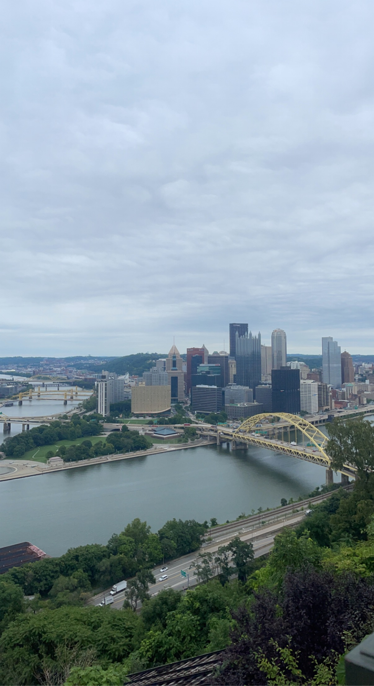

About Me
Hello, my name is Logan Schmidtmann and this website gives insight to some of my recent and favorite vacations! I enjoy traveling a lot and find joy in sharing what I see with others.
I hope you find this website enjoyable and get a quick glimpse into my life and travels!
Here is a pro list for each destination: